Barn Owl A.5
Anatomical continuity from the facial disc through the shoulder and folded wing.
Photographic comparisons
Each pair places a photograph on the left and the A5 specimen on the right. The photographs provide qualitative landmarks. Their camera angles and scale differ from the studio views.
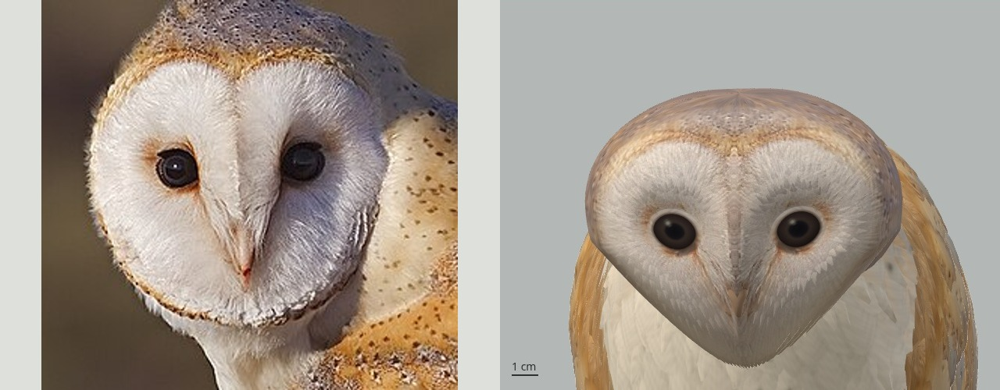
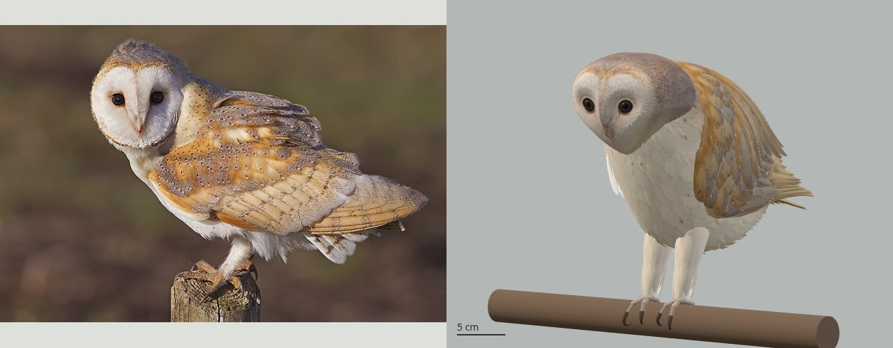
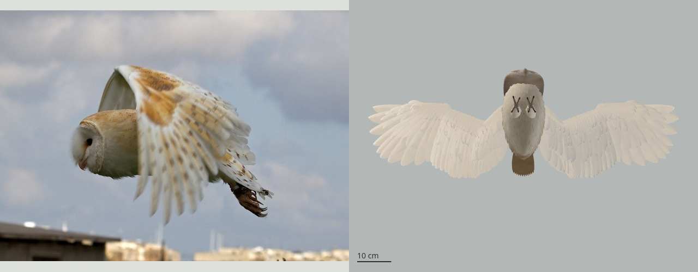
Perched owl by Steven Ward and flying owl by Tony Hisgett. The plates include cropped and resized reproductions. Perched source · Flight source · CC BY 2.0.

.jpg){kind=link}
Anatomical proportions
World-axis bounds in centimetres. Head dimensions include the nape plumage. The head pivot is measured from the root at the perch after two seconds of idle.
| Dimension (cm) | A4 | A5 |
|---|---|---|
| Head width | 11.9 | 11.9 |
| Head height | 11.9 | 11.0 |
| Head depth including nape | 12.4 | 14.3 |
| Head pivot height | 23.9 | 23.1 |
| Head pivot forward offset | 4.8 | 6.8 |
| Torso height | 21.5 | 20.0 |
| Torso depth | 22.0 | 23.3 |
| Perched height | 30.8 | 29.1 |
| Extended span | 91.7 | 91.3 |
The pectoral girdle inclines forward by 9.2° relative to A4. The feet sit 2.5 mm lower on the same perch. Both revisions use the same animation inputs, joint rotations and timing.
Matched views
A4 appears on the left and A5 on the right. Each pair shares an orthographic camera, scale, lighting and 120 fixed simulation steps. Extended views use the unfolded pose. All other views use perched idle.
Facial disc
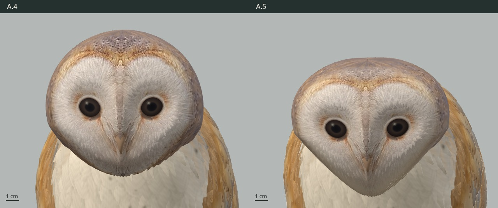
Side
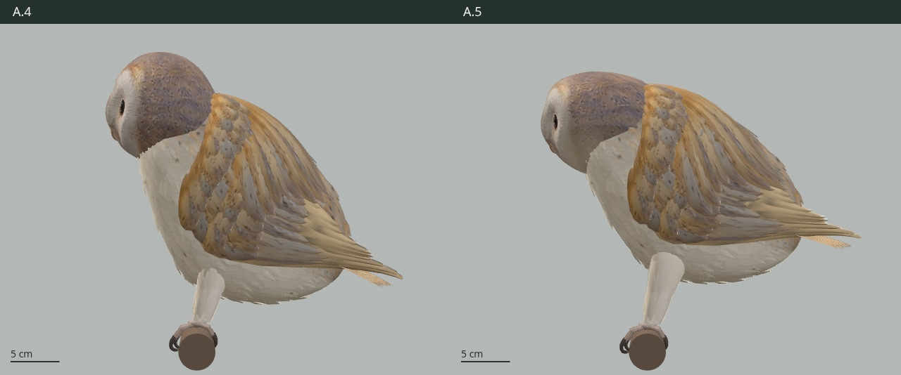
Front
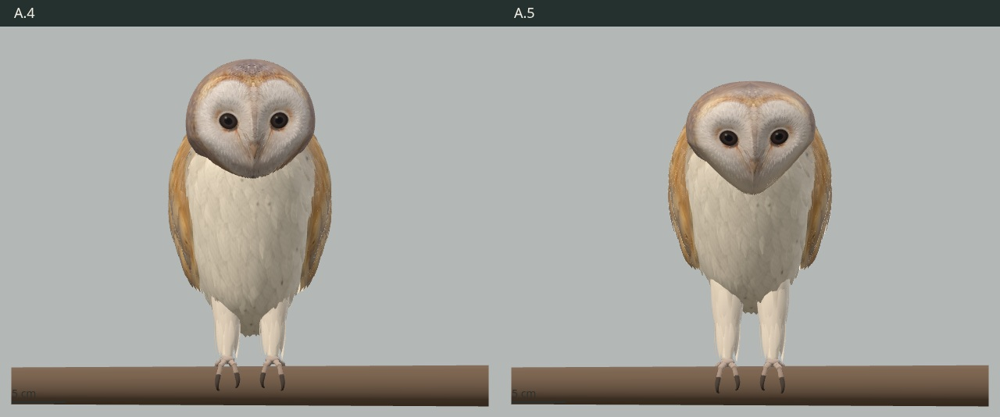
Rear
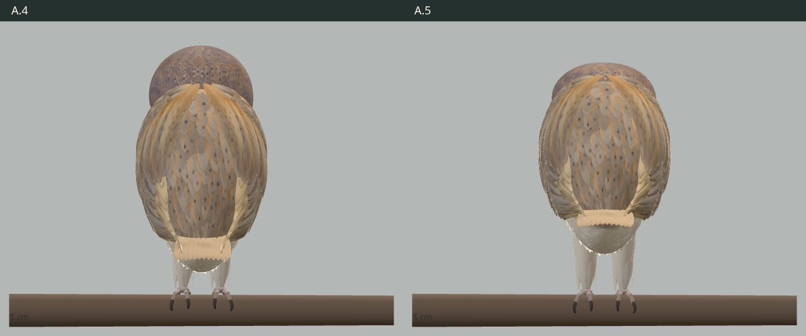
Three-quarter
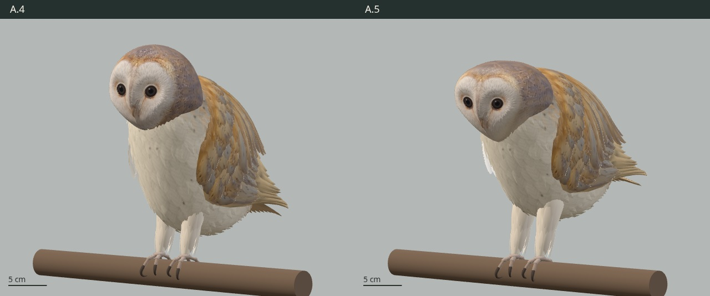
Folded wing
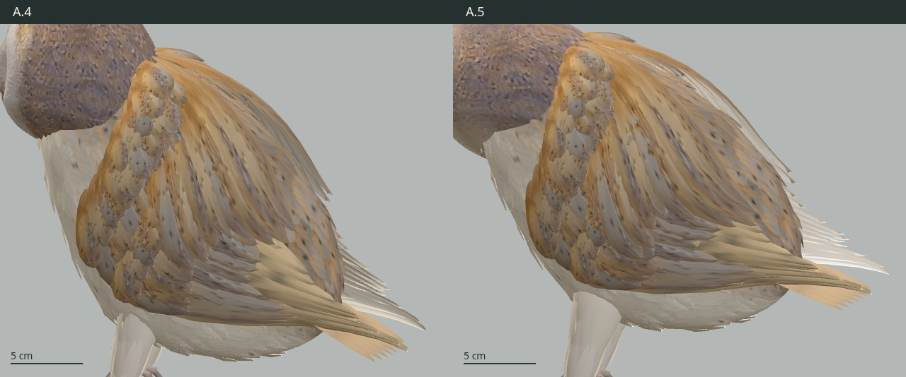
Extended dorsal surface
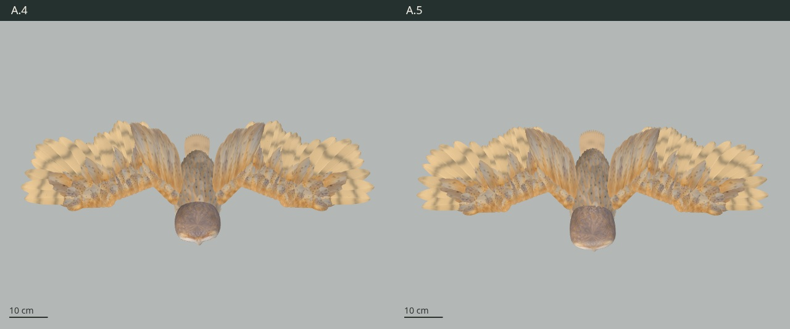
Extended ventral surface
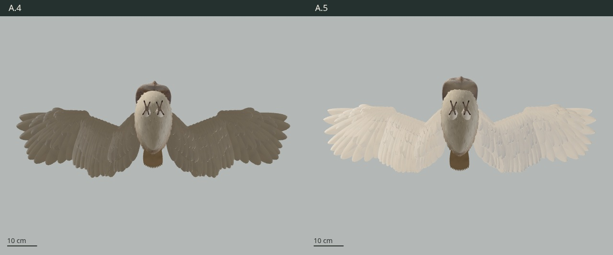
Toes and talons
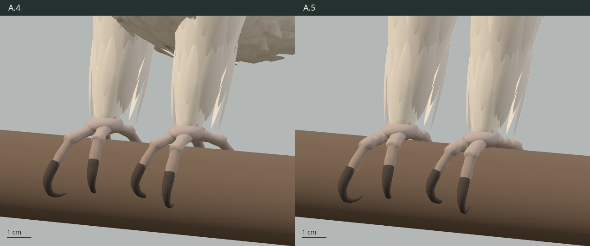
Head outline from the front
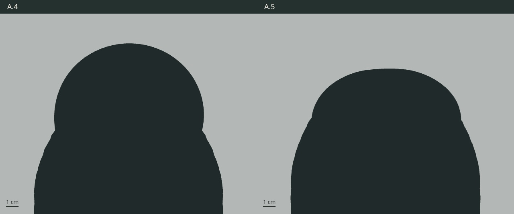
Head and mantle in profile
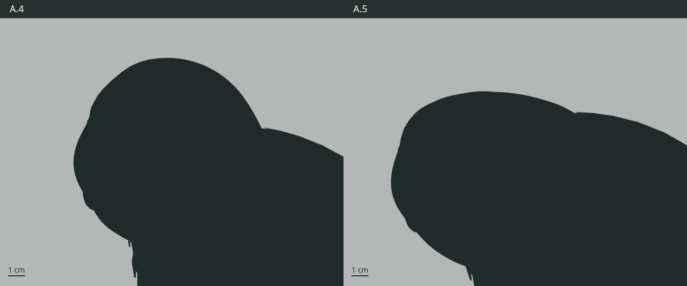
A5 folded and extended feather tracts
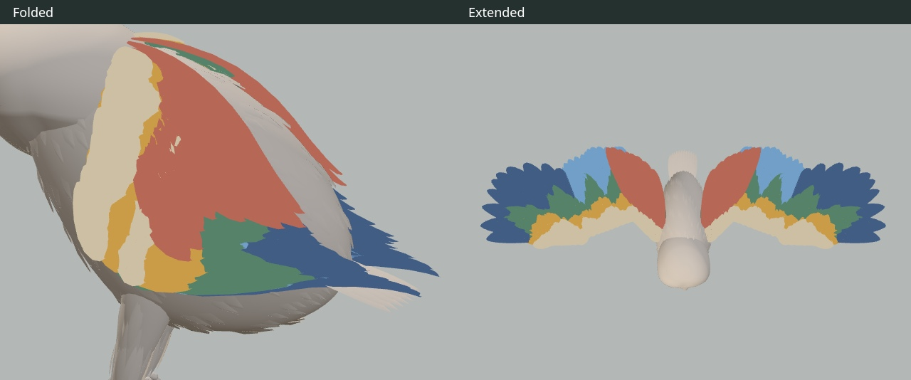
Rendering cost
Chromium ANGLE SwiftShader, one animated owl, 640 × 500 pixels. Timings include animation update, draw and synchronous pixel readback, with 32 samples after 12 warm-up frames. Hardware GPU timings are unmeasured. Texture memory includes the shared RGBA albedo maps and their mip levels.
| Revision | LOD | Triangles | Draws | Texture MiB | Median ms | P95 ms |
|---|---|---|---|---|---|---|
| A.4 | 0 | 51,468 | 14 | 5.00 | 95.2 | 100.3 |
| A.5 | 0 | 54,156 | 14 | 5.00 | 102.1 | 140.7 |
| A.4 | 1 | 28,312 | 14 | 5.00 | 76.4 | 90.5 |
| A.5 | 1 | 28,632 | 14 | 5.00 | 82.9 | 97.7 |
| A.4 | 2 | 10,242 | 14 | 5.00 | 23.2 | 54.9 |
| A.5 | 2 | 10,130 | 14 | 5.00 | 24.8 | 57.3 |